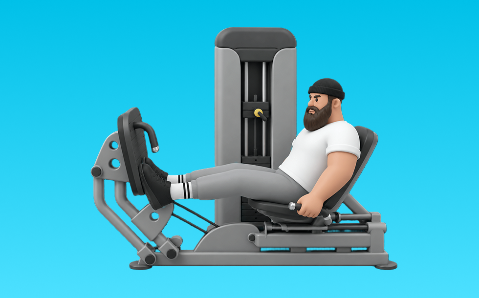

レッグプレスカーフレイズ

レッグプレスカーフレイズとは、マシンを使って「つま先立ちする」動作でふくらはぎ（腓腹筋、ヒラメ筋）を鍛える種目です。軌道が安定して狙った部位に効かせやすいのが特徴で、かかとを下ろしてから高く上げる動作を繰り返します。ふくらはぎのボリュームアップや足首の安定が期待できます。
- 対象部位
- 脚
- 器具
- マシン
- 記録形式
- 重量・回数
- 別名
- プレスカーフ
YouTube動画
-
レッグプレスでふくらはぎを鍛えるカーフレイズ
-
【筋トレ】かっこいい脚を手に入れる最強のトレーニング、カーフレイズの注意点とは【脚トレ】
-
ジムトレ応用編 【 レッグプレスマシンでふくらはぎの筋トレ】～カーフレイズのやり方～柔軟性向上・むくみ解消におすすめ！
-
【脚トレ】ふくらはぎをデカくしたいならこれをやれ！カーフが成長する最強種目3つと方法について徹底的に解説します【筋トレ】
-
筋トレ初心者が最初に覚えるべき脚トレのマシン使い方解説【エニタイムフィットネス】
-
【これ観れば全て解決】SGIRの脚トレ５種目。実演＆各種ポイント付き
-
【脚トレ】ふくらはぎの筋肉をかっこよくする筋トレはこれです。
YouTubeショート
-
人間の域を超えたカーフ【世界の筋肉】
-
レッグプレスは3分の2しか押さない
-
【SGIR】ジョージとSamと学ぶカーフレイズのポイント
-
カーフレイズ#筋トレ
-
レッグプレス300kg#shorts#筋トレ
-
ジュラシック木澤が45度レッグプレスに対して思ってる子事
-
【脚トレ】スミスカーフレイズ # #筋トレ解説 #脚トレ #脚トレーニング
-
【安全のために必ずセーフティを】 #筋トレ #パーソナルジム #パーソナルジム #富山 #ふくらはぎ #カーフレイズ
-
ダイエットにお勧め！レッグプレスで鍛え分ける！ #shorts
-
ミニマリスト脚トレ3種目を紹介 #フィットネス #筋トレ
-
【初心者でも安心】簡単！脚トレ4選 #筋トレ #脚トレ#ダイエット#ボディビル #shorts
-
足が速くなる筋トレを教えます
-
脚トレはランジ。#脚トレ #トレーニング #ジム #脚痩せ #ダイエット #フィジーク #筋トレ
-
【危険】これを知らずにトレーニングしてるとランニングに繋がらない！？走るために必要な筋肉は◯◯が意外と重要だった #ランニング#マラソン#トレーニング#shorts
-
鬼の脚トレ6種目🔥 #筋トレ #スクワット #脚トレ
-
持田選手にもも裏に効くレッグプレスについてレクチャーしていてもらいました！次はどの種目の解説をやってほしいかコメントしてね！#筋トレ #volix #トレーニング #ちょこっと惜しい
-
【筋肉つかない】自重トレ3種目 #自重トレーニング #筋トレ #フィットネス
-
山を走ると足がムキムキになります。 #ランニング #筋トレ女子 #アスリート女子
-
絶対買うべき筋トレ器具 #筋トレ #ホームトレーニング #トレーニング #筋肉 #ホームトレーニー #ボディビル #フィジーク
-
【忙しい人向け】30分で終わる脚トレ#shorts #youtubeshorts #筋トレ大学 #筋トレ #脚トレ
-
自己ベスト80kgなるか、、、？ #Shorts #筋トレ女子 #ベンチプレス
-
ジムあるある、最初みんなつまずくよねw #shorts
-
筋トレあるある「脚トレの日の朝によく見る走馬灯」#shorts
-
【初心者必見】前もも強化！レッグエクステンションのポイント紹介 #筋トレ #脚トレ #レッグエクステンション
-
レッグエクステンションをより効果的にする3つのテクニック #筋トレ #フィットネス
-
スタンディングカーフレイズの使い方[脚]
-
腹筋を最大限に鍛える種目３選【筋トレ】
-
今すぐ辞めて⚠️脚が太くなるブルガリアンスクワット
-
初心者必見！スミスマシンで行う脚トレ6選詰め合わせ！ #筋トレ
-
📌実は逆効果なトレーニング！？#ジャンプ力 #パフォーマンス向上 #スポーツトレーニング #フィジカルトレーニング #plyometrics #jumptraining
-
【筋トレあるある】筋トレ歴別ジムファッションの違い#筋トレ #筋肉#筋肉あるある
-
スクワットで脚が太くなるってホント??
-
ジャンプ力上げるにはスクワットは必須#体幹トレーニング #トレーニング #股関節 #サッカートレーニング #shorts #short
動作方法
- 足幅を決め、体幹を固める
- 股関節と膝を同時に曲げて下ろす
- 足裏全体で床を押して立ち上がる
動作ポイント
- 膝とつま先の向きをそろえる
- 胸を落としすぎない
- かかとを浮かせない
ワンポイントアドバイス
- ウォームアップで股関節と足首を動かす
- 高重量の日はセーフティ設定を確認する
目的別回数設定
目的や体力に応じた一般的な目安です。無理のない範囲で調整してください。
- 筋力アップ
- 1〜5回
- 筋肥大
- 6〜12回
- 持久力アップ
- 13〜20回
YouTube動画について
動画はYouTubeの公開情報をもとに表示しています。内容は投稿者によるもので、Biggrによる監修ではありません。
アプリを入手
筋トレやトレーニングの記録はBiggrにお任せください。今すぐ無料で使い始められます。